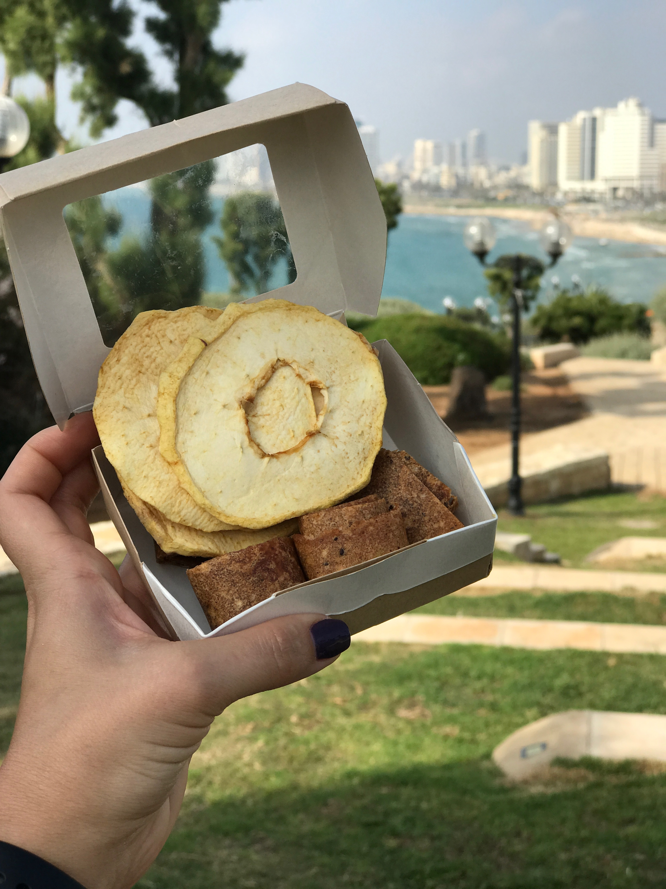

Яблоко. Полезные свойства.
В яблоке главным образом ценится присутствие железа и витамина С, но плод содержит: бета-каротин, витамины А, В1, В2, В5, В6, В9, Н и РР, а также необходимые организму человека минеральные вещества: калий, кальций, магний, никель, молибден, фосфор и натрий. Яблоки в большом количестве содержат пектин и клетчатку.
Калорийность яблока составляет 47 ккал на 100 грамм продукта.